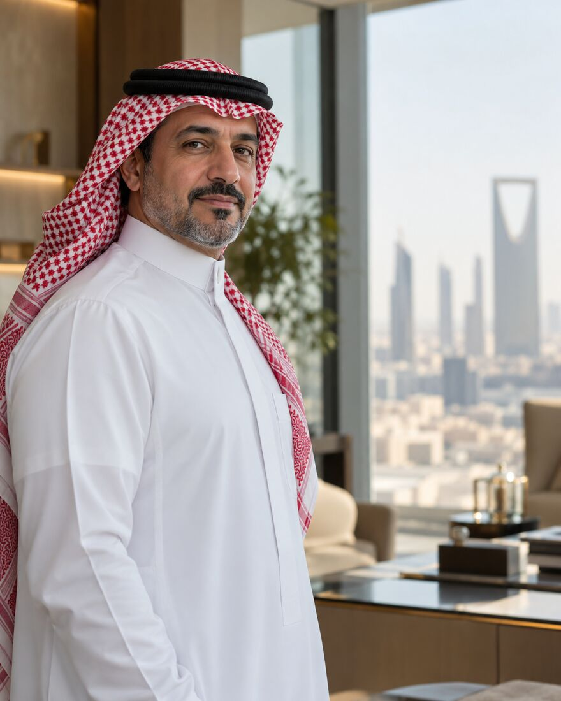

القيادة والتطوير التنفيذي
تقييم الفريق القيادي، وبناء خطة تطوير لكل قائد ترتبط مباشرة بأهداف المنشأة.
- تقييم 360 درجة
- خطة تطوير فردية
- جلسات متابعة
مستشار ومدرّب تنفيذي يرافق القيادات في المملكة والخليج، من صياغة الخطة حتى تعمل في الميدان.

خارطة 90 يومًا، أسبوعًا بأسبوع
أمضى عامر السديم مسيرته بين غرف الاجتماعات ومواقع التشغيل: أدار مشاريع بنية تحتية ومرافق، وقاد فرق تشغيل وصيانة، ثم بنى أطر حوكمة ومخاطر لجهات حكومية وخاصة.
يعمل اليوم مستشارًا ومدرّبًا تنفيذيًا مع القيادات التي تريد أن ترى خططها تعمل، ومع الفرق التي تريد أن تتخذ قرارها بثقة ووضوح.
خمسة مسارات تعمل منفصلة أو مجتمعة، ولكل ارتباط مخرجات مكتوبة تُسلَّم وتُتابع.
تقييم الفريق القيادي، وبناء خطة تطوير لكل قائد ترتبط مباشرة بأهداف المنشأة.
تأسيس مكتب إدارة المشاريع أو إعادة ضبطه، والتدخل لتعافي المشاريع المتعثرة.
صياغة الاستراتيجية وترجمتها إلى مبادرات ومؤشرات ومسؤوليات لا تحتمل التأويل.
رفع جاهزية الأصول، وضبط عقود التشغيل والصيانة على أساس الأداء لا عدد الساعات.
أطر حوكمة تُسرّع القرار، وسجل مخاطر يُستخدم فعلًا على طاولة الاجتماعات.
برامج محددة البداية والنهاية، بمراحل واضحة وجلسات سرية بين القائد ومدرّبه.
للمدير العام ونوابه ومن في حكمهم: وضوح في الأولويات، وحضور أقوى أمام المجلس، وفريق يتحمل مسؤولية النتائج.
لفريق الإدارة العليا حين تتقاطع الصلاحيات وتتباطأ القرارات: لغة مشتركة، واتفاقات عمل، ومتابعة للالتزام.
من أول يوم في المنصب: قراءة المنشأة، وكسب الثقة، وتحقيق أول نتيجة ملموسة قبل نهاية الربع.
تُقدَّم داخل المنشأة أو عن بُعد، وتُبنى تمارينها على حالات من واقع الجهة نفسها.
عن الفجوة بين ما يُكتب في الخطة وما يحدث صباح الأحد.
الصلاحيات واللجان والمخاطر بلغة يفهمها من يتخذ القرار.
دليل أسبوعي لمن تسلّم منصبًا قياديًا ويريد بداية لا تُنسى.
السنة الأولى تحملها الحماسة، والثانية يحملها النظام. ثلاث علامات مبكرة تخبرك أن خطتك تحتاج إلى حوكمة تنفيذ قبل أن تحتاج إلى مراجعة.
مهندسًا في إدارة التشغيل والصيانة لمرافق كبرى.
قيادة محفظة مشاريع بنية تحتية في 3 مدن.
تأسيس إدارة الحوكمة والمخاطر والالتزام في جهة شبه حكومية.
التفرغ للاستشارات، والعمل مع جهات حكومية وخاصة.
أكملوا برنامج القائد التنفيذي.
«خرجنا من الأسابيع الأولى بمصفوفة صلاحيات واضحة، فاختصرنا دورة اعتماد القرار إلى النصف تقريبًا.»
مدير عام، جهة حكومية (نموذج)
«لم يعطني إجابات جاهزة. كان يسأل السؤال الذي أؤجله، ثم يتابع معي حتى أتخذ القرار.»
رئيس تنفيذي، شركة خاصة (نموذج)
30 دقيقة عن بُعد، نفهم فيها التحدي الذي تواجهه ونقترح المسار المناسب. بلا التزام.
هذا نموذج عرض، فلم يُرسَل أي طلب فعليًا.